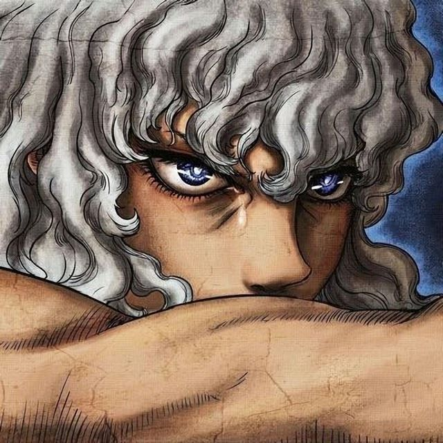
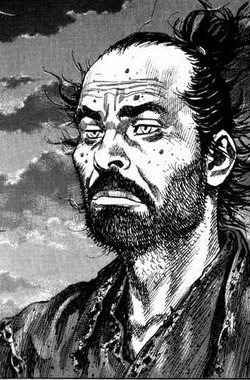
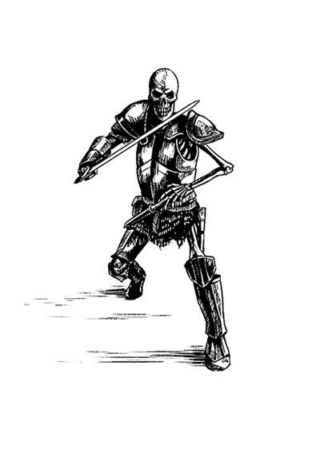
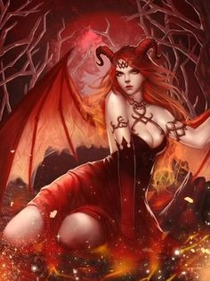
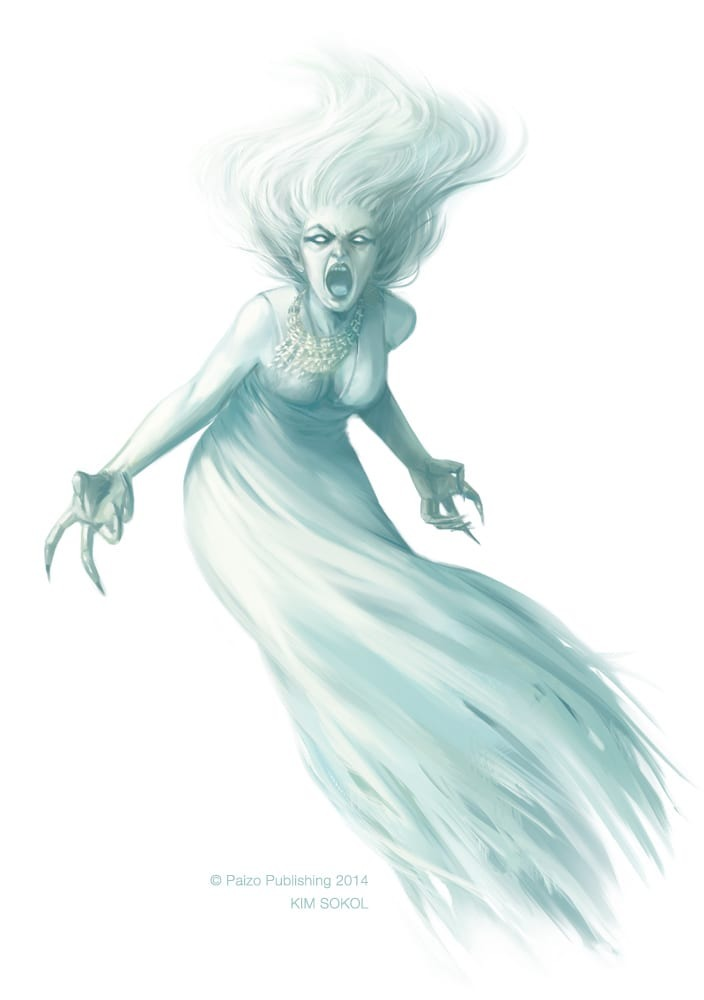

A História do The Legend of Banshee
The Legend of Banshee - Uma história de vingança.
A história do The Legend of Banshee se inicia com um diálogo do jovem espadachim Julian com Karl, um mestre espadachim aposentado.
Mestre Karl salva o garoto de seu vilarejo aonde uma invasão é feita por uma criatura mítica conhecida como Banshee.
A Banshee mata quase todos os habitantes da vila com seu grito estridente, incluindo os pais do jovem espadachim (Godo Blanc e Rosa Blanc).
Com fogo, a criatura destrói a floresta e quase todas as casas.
Uma parte da população do vilarejo é mantida como refém enquanto Banshee realiza invocações de criaturas na floresta com intenção de atacar outros vilarejos.
Julian precisa encontrar todos os itens necessários para sua batalha e vencer as invocações Skull (Esqueleto) e Succubus (Demônio).
Para isso ele precisará encontrar a espada forjada pelo seu pai, Godo Blanc, um ferreiro extremamente experiente e ex-combatente na guerra entre os impérios de Renania e Goddard.
A espada BansheeSlayer foi feita com aço do emblema de fogo, antiga relíquia lendária cujo aço havia sido derretido e continha magia. A lenda de Banshee era conhecida por Godo que temia pela segurança da sua família e do seu vilarejo com as mudanças recentes nos impérios de Renania e Goddard, aonde a magia negra havia começado a ser invocada.
Julian durante o ataque da Banshee ao seu vilarejo perde a audição.
O desafio se torna muito maior, contudo, a sede por vingança é a força motriz desta história.
Personagens e inimigos
| Imagem | Nome | Tipo | descrição |
|---|---|---|---|
|  | julian | Espadachim | Julian Blanc é um jovem espadachim, filho de Godo e Rosa Blanc. Na história Julian começa sua batalha após ter se tornado surdo, como consequência de um ataque da Banshee que destrói seu vilarejo e mata seus pais. |
|  | Karl | Espadachim (SpellBlade) | Karl Thoreau é um mestre espadachim aposentado. Lutou durante a guerra de Renania e Goddard, dois impérios inimigos.. Na história Karl é o responsável por salvar Julian e deixa-lo na floresta que faz fronteira entre os reinos. |
|  | Skull | Invocação de demônio | Invocação de demônio com magia negra feita pela Banshee para destruir humanos. |
|  | Skull | Invocação de demônio | Invocação de demônio com magia negra feita pela Banshee para destruir humanos. |
|  | Banshee | Criatura mitica | Banshee, anteriormente conhecida apenas como uma lenda nos reinos de Renania e Goddard passou a se tornar uma ameaça real. Invocada por um mago desconhecido, Banshee na história utiliza sua magia e grito ensurdecedor para destruição de todo o vilarejo de Dovalsk no reino de Renania, assim matando os pais de Julian Blanc e mantendo o vilarejo sob seu controle enquanto invoca novos criaturas para seu exército. Só o mais forte espadachim poderá vencê-la. |